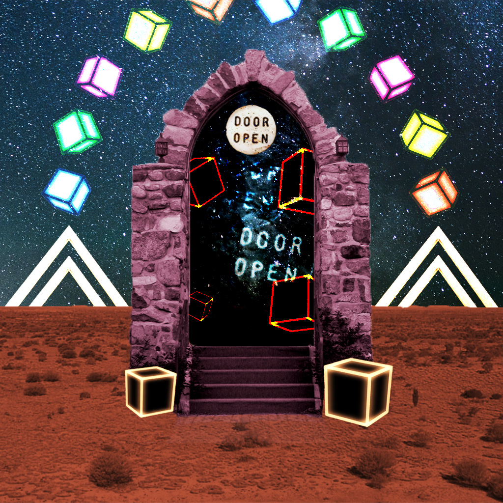

Kyr's world
Here is an intriguing image that offers a glimpse into the AfterLife. It is a virtual world where the essence of those who have passed on lives on indefinitely. In this world, memories, emotions, and traits are still present, and the environment takes on various shapes, forms, and colors. It is a captivating world that is both abstract and concrete, and exploring it will be possible in the future.